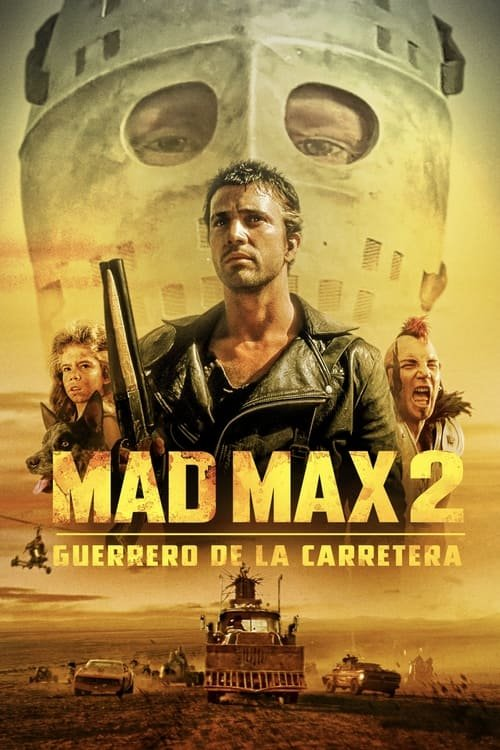

Mad Max 2: El guerrero de la carretera (1981)
Sinopsis Rápida
En un futuro desolado y devastado, Max Rockatansky, un solitario guerrero de la carretera, se ve envuelto en una lucha por la supervivencia contra una brutal tribu de motoristas salvajes.
Sinopsis Detallada
Mad Max 2: El guerrero de la carretera intensifica la acción y la violencia de su predecesora, presentando un mundo aún más desolado y brutal. Max, ahora un héroe reacio, se une a una comunidad amurallada que necesita su ayuda para obtener gasolina y escapar de las hordas de motoristas lideradas por el despiadado Humungus. La película es un festín visual de persecuciones frenéticas, efectos prácticos impresionantes y una atmósfera opresiva que refleja la desesperación del mundo post-apocalíptico. La búsqueda de recursos y la lucha por la supervivencia son temas centrales, presentando una crítica a la sociedad y la naturaleza humana en circunstancias extremas.
¿Por qué tenés que verla?
- Una experiencia cinematográfica visceral y llena de adrenalina, con escenas de acción inolvidables.
- La innovadora dirección de George Miller crea una estética única e influyente en el cine de acción.
- Su impacto en el género post-apocalíptico es innegable, inspirando innumerables películas y videojuegos.
- Una historia de supervivencia y resistencia humana en un mundo despiadado.
Idea Extra
Análisis comparativo de la evolución de la estética y la violencia entre Mad Max y Mad Max 2: El guerrero de la carretera